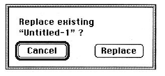

Return to previous page ｜ Return to menu ｜ Go to next page
●Quit
- Quits the tone editor and returns to the viewfinder.
If the window is open, a warning dialog box will appear.

-
Edit menu
●Cut
In the - Layer window, cut the layer from the format and save it to the clipboard.
When the Voice window is displayed, the layer attached to the voice chunk is cut and the voice chunk information and the layer chunk information attached to it are saved to the clipboard.
Cut from PEG, Velocity, PLFO format and save to clipboard.
-
Copy
In the - Layer window, copy the layer chunk information and save it to the clipboard.
In the Voice window, copy the voice chunk information and the layer information that accompanies it, and save it to the clipboard.
Copy from PEG, Velocity, PLFO format and save to clipboard.
●Paste
- Pastes the data saved on the clipboard.
You can only paste in the same window as the clipboard data information.
Data will be overwritten.
●Insert
- Increase voice, layer, or mixer by 1
Return to previous page ｜ Return to menu ｜ Go to next page